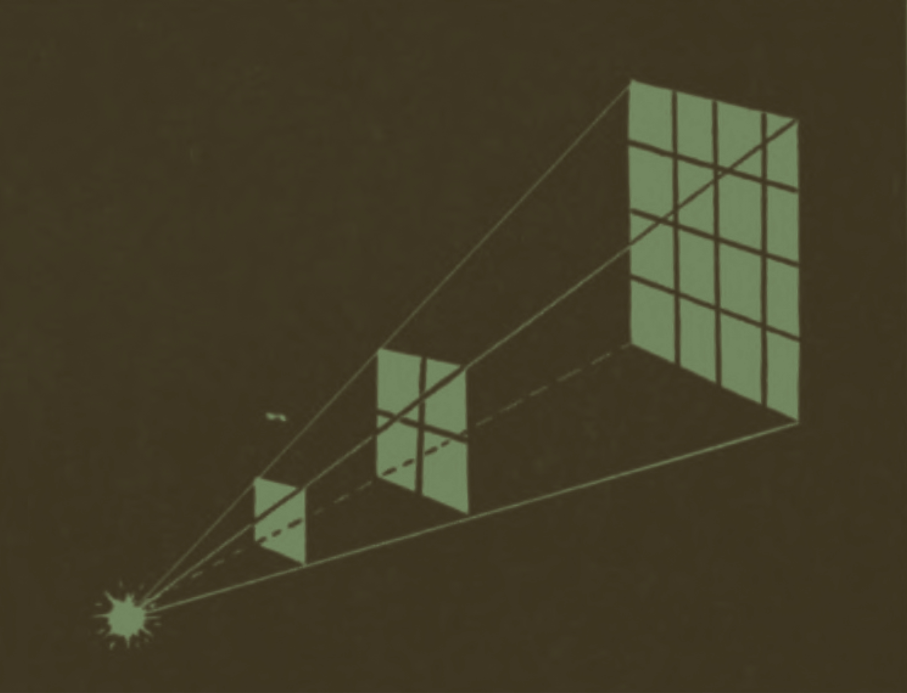
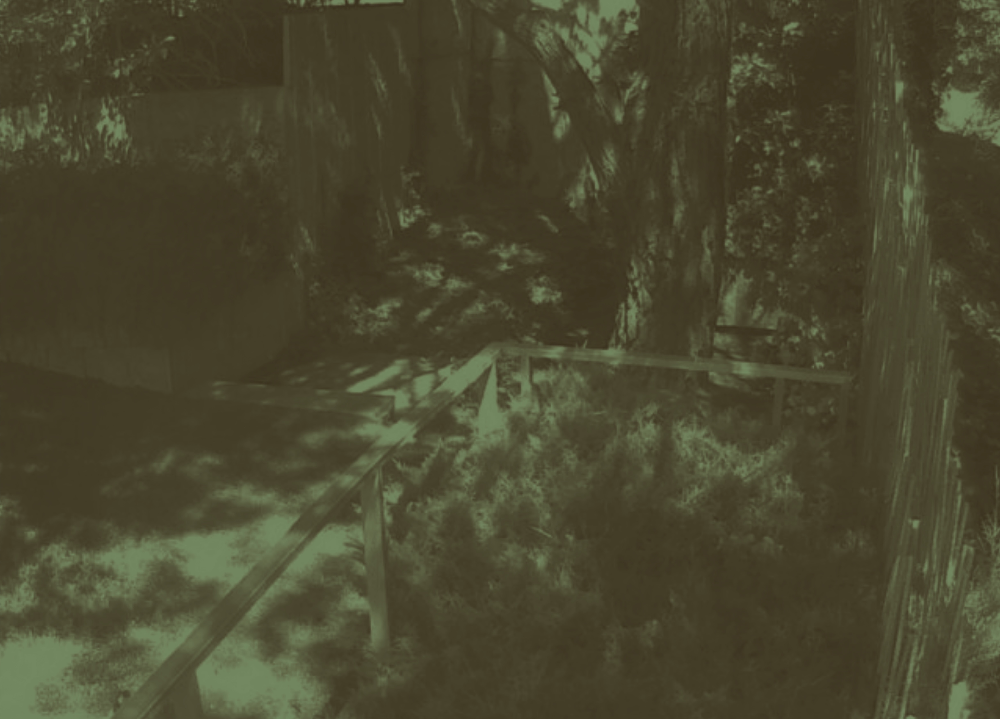

White streams pool
in an ever-shifting flow atop its surface.
Each moment commemorated by the enduring undulations of that deep, abundant blue.
The light’s perpetual crawl washes across the sphere in equal measure as the mass turns, and turns, and turns.
y informs the meeting between Green and Blue, where Green shifts and ripples almost in response to the fluctuation of Blue, but in more languid gradation.
Upon inspection,
this sphere
strikes
an impossible equilibrium
between the
vast and

minute.
Vastness is made apparent through closeness.
Masses of Green conceal the abundance of rich hues, shapings, and patterns that comprise it.
Trails unravel in accordance with the ebb and flow of matter, until suddenly,
miraculously,
there they are.
.
At light’s touch, they emerge into the open, populating the open space and the Green becomes alive.
Small forms bloom and
follow the light as it travels.
